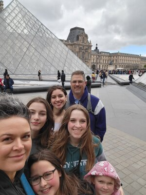

Le Louvre, Paris

Nevesky Cathedral, Sofia
This blog is a collection of my fondest memories, the things that made me the person I am today. Having traveled and lived in places like Quito, Ecuador, and Sofia, Bulgaria I have learned about culture, language, and tradition in these places. When I moved for the first time I was very nervous because I had little to no knowledge about the places I was moving to. I am hoping that this website will help educate others on places I have been to as well as include some good traveling tips. Although I am not the most educated on travel I have definitely experienced things that could help others. All the pictures included will be pictures that either I or another one of my family members have taken on our trips.
I moved to Ecuador when I was 12 during COVID-19. I had to leave Utah where I grew up and move across the world. Covid was a crazy time and even crazier when having to travel. The masks, social distancing, and hand sanitizer are engraved in my mind. I first lived in DC for a few months then flew to Ecuador. We left DC at the beginning of January where it was fairly cold and arrived in Ecuador where the sun was shining. I have never seen a more beautiful country. It is full of sunlight, volcanoes, mountains, flowers, trees, birds and the colors of nature jump out at you everywhere you look. It felt like I constantly had a filter on my eyes. Spanish is the local language which luckily my dad knew but the rest of my family did not understand a bit of it. I fell in love with Spanish. I did not know Spanish but I grew up learning French and that aided me in learning Spanish. I could not go to school in person due to Covid so I did it online. Which gave us some more time to travel a bit. While I lived there I traveled to the Amazon, Galapagos, and Guayaquil which I hope to talk about in this blog. Ecuador will always have a special place in my heart. The people there are so very kind and I loved learning about every aspect of their culture.

After 2 years we left Ecuador and moved to Bulgaria which is located in Southeast Europe. Bulgaria is the oldest European country. Before we moved there I genuinely had never heard of it before. I was thrown into it pretty quickly. Right when we got there I could instantly feel a difference. It was mid-February and cold when we arrived. The language was way different than Spanish, English, or French which are the languages I am familiar with. All the signs were in Cyrillic and none of my family knew Bulgarian. The first couple of months living in Bulgaria I did not enjoy it. It was cold, I could not understand the language, I did not know anybody and the people did not seem friendly. However, over time Bulgaria grew on me. Bulgarians have very stern unexpressive faces until you get to know them. I started to learn the language a little and it became fun. During the time that I was there, I went to France, Italy, Greece, London, and The Black Sea. I loved each one of these places and I will talk about each of them in this blog. During the time I spent in Bulgaria I learned a lot and I am grateful for it. Now I live in Rexburg Idaho going to university. I miss traveling however I never realized how much I missed stability. Having to move my entire life across the world as a family of 7 is harder than you may think. But at the end of the day it was all worth it for the experience.